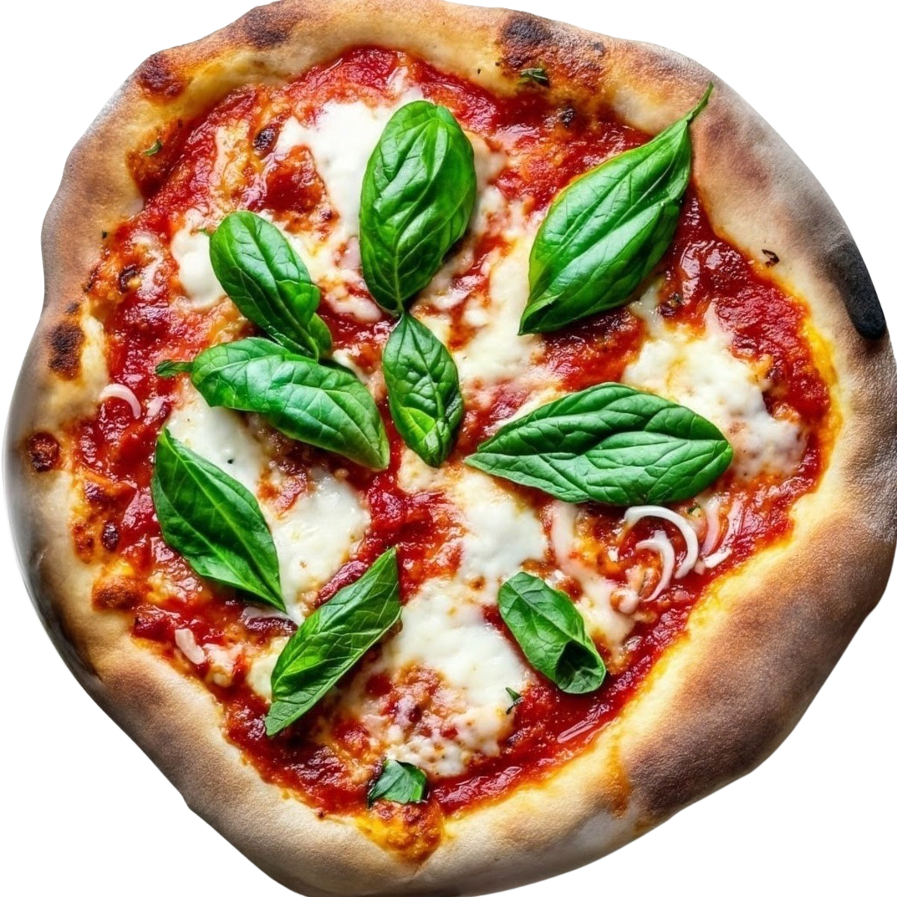

The Recipe
To make Traditional Italian pizza you need:
140 g (1⅙ cups) All-purpose flour
100 g (⅖ cup) Warm water
1¾ g (½ tsp) Dried yeast OR 3¾ g Fresh yeast
½ tbsp Extra virgin olive oil
¼ tbsp Salt
125 g (4½ oz) Passata or crushed tomatoes
½ clove Garlic, minced
⅜ tbsp Olive oil
Salt to taste
A few basil leaves